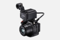

器材库 > 高清摄像机 > XC15

规格总览
发布日期
2016-09-06
HD
4K
影像传感器
影像传感器
CMOS
影像传感器尺寸
1.0英寸
总像素
1336万
有效像素（动态模式）
829万
有效像素（静态模式）
1200万
镜头和对焦
光圈
f/2.8-5.6 8叶片虹膜光圈
等效35mm焦距
[动态影像] 27.3-273mm [静态图像4:3] 24.1-241mm
光学变焦
10倍
拍摄性能
录制格式-视频
MPEG-4 AVC/H.264
录制格式-音频
线性PCM(16bit/48kHz)，2通道
录制格式-静态图像
JPEG
视频尺寸
4K 3840×2160，全高清 1920×1080
静态图像尺寸
[3:2] 4000×2664[4:3] 4000×3000 / 640×480[16:9] 3840×2160
白平衡
自动/日光/阴影/多云/荧光灯/荧光灯H/钨丝灯/闪光灯(*)/色温设置(1/2)*用于照片模式
防抖系统
光学影像稳定系统和电子影像稳定系统
其它功能
可旋转握把(可前后旋转各约90度)，慢动作&快动作记录，预记录(仅在高清记录模式)，间隔记录(仅限照片模式)/音频场景选择/强力防抖/画 面放大(可移动放大位置)/色条/轮廓辅助/斑马纹显示/自定义功能/可指定按钮/标记显示/数码长焦转换(2倍)，支持GPS(GP-E2)
液晶屏/取景器
取景器
随机附件包括取景器单元
LCD尺寸
3.0英寸
LCD像素
约103万
LCD类型
彩色TFT LCD
LCD特性
触摸屏, 翻转屏
存储规格
存储卡
SD/SDHC, SDXC, CFast
输入输出
数据接口
Mini USB
视频/音频接口
HDMI 输出
无线功能
Wi-Fi
配件端口
耳机, 麦克风输入端子, 冷靴
电源
电源（电池/电源适配器）
电池 LP-E6N 1865mAh
机身规格
颜色
黑色
尺寸
125×106×122mm
重量
955g
其它
软件
佳能小型电源适配器CA-570，镜头盖，电池LP-E6N，取景器单元，遮光罩，麦克风适配器MA-400，USB连接线IFC-300PCU/S，HDMI连接线，肩带，收线夹，单元连接线
该产品暂无存档的网友点评
产品图 / 样片
XC15